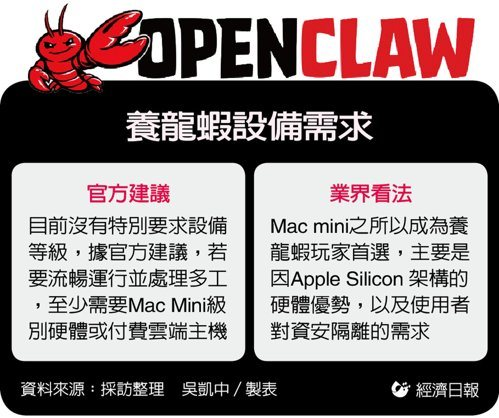

AI代理用養龍蝦
從AI技術到實際養殖的創新應用
歡迎來到「AI代理用養龍蝦」專題網頁！這裡我們將探討如何利用人工智慧代理技術來優化龍蝦養殖過程， 從自動化監控到智慧決策，讓養殖更有效率、更永續。本專題涵蓋核心技術、應用場景、風險評估以及未來展望。

從AI技術到實際養殖的創新應用
歡迎來到「AI代理用養龍蝦」專題網頁！這裡我們將探討如何利用人工智慧代理技術來優化龍蝦養殖過程， 從自動化監控到智慧決策，讓養殖更有效率、更永續。本專題涵蓋核心技術、應用場景、風險評估以及未來展望。